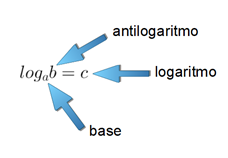

Vamos a estudiar ahora unas sorprendentes herramientas matemáticas.
Cuando no existían calculadoras (y mucho menos ordenadores) se les concibió como una forma para facilitar cálculos tediosos. Fueron las estrellas del universo matemático por aquellos entonces (siglo XVI).
Es lógico pensar que con la llegada de las calculadoras caerían en el olvido. Sin embargo, su uso no ha hecho más que crecer. ¡Curioso! ¿Verdad?
Pues así es. Son útiles para la resolución de ecuaciones y aparecen de forma habitual en situaciones relacionadas con las ciencias. Por ello es necesario que los conozcamos, controlemos sus propiedades y sepamos su potencial.
¡LOS LOGARITMOS!
Lectura facilitada
Ahora vas a estudiar unas herramientas matemáticas.
Cuando no existían calculadoras se utilizaban estas herramientas matemáticas
para resolver cálculos aburridos.
Estas herramientas matemáticas fueron las estrellas del universo matemático
en el siglo dieciséis.
Estas herramientas matemáticas son útiles para la resolución de ecuaciones.
Estas herramientas matemáticas son los logaritmos.

- b>0
- b es mayor que 0
- a>0
- a es mayor que 0
- a≠1
- a es diferente de 1
{kind=link}
{kind=link}